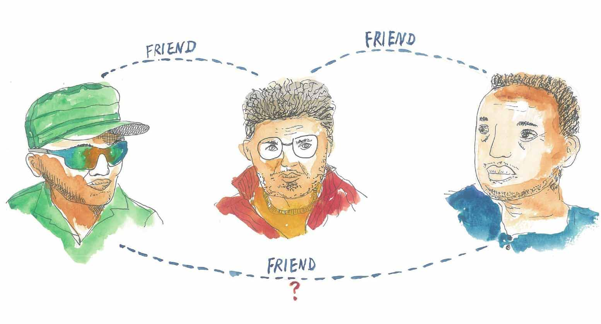
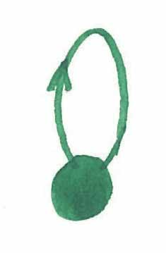
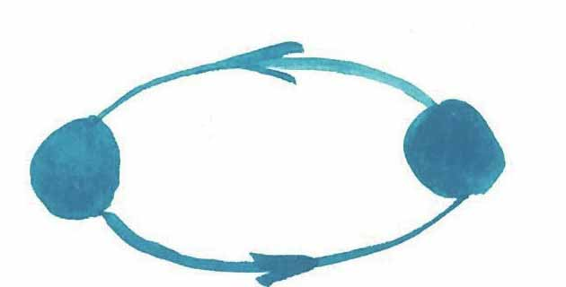
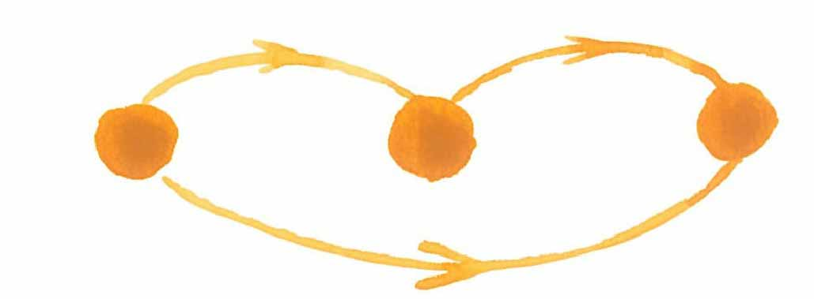
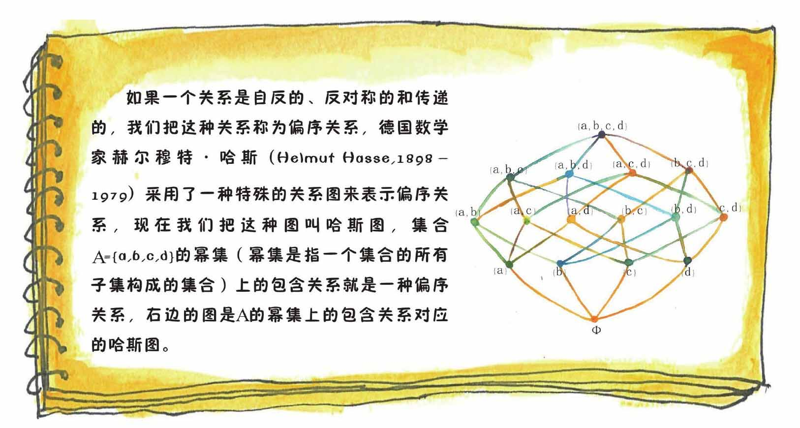

不同的关系有不同的性质，搞清楚这些关系的性质有助于我们深入地了解事物之间的联系。
比如谈到生日，我可以说我自己跟自己生日相同。
再看两个人之间的朋友关系，如果我一个朋友都没有，我可以说自己跟自己是朋友，对吧？
两个整数之间的整除关系，我也可以说一个非零的整数自己可以整除自己。
这里，我们可以说生日相同关系、朋友关系、非零整数之间的整除关系具有“自反性”。
但是，你想想，母子关系、借书关系、小于关系就不具有自反性，你说是不是？
张三跟李四生日相同，则李四跟张三生日肯定相同。
张三和李四是朋友，李四肯定与张三是朋友（说明一下哦，这里的“朋友”指的是相互认识）。
所以，我们说生日相同、朋友关系具有“对称性”。
小文，你看看，整除、母子关系、大于关系、小于关系有对称性吗？
当然，答案是否定的。
对于生日相同关系——如果张三和李四生日相同，李四和王五生日相同，那么张三肯定和王五生日相同，对不对？因此我们说生日相同关系具有“传递性”。
但是，小文，你跟你的朋友的朋友还是朋友吗——答案是不确定的，所以说朋友关系不具有传递性。

有的时候，我们可以用图的形式来表示关系的这些性质，方法是这样的，不管是人、是物还是数字，我们统统将它们抽象成离散的点，如果“某个点”与“某个点”存在某种关系，那么，我们就用一条带箭头的弧线将两个点（也可以是同一个点）连起来：

自反性

对称性

传递性

关系无处不在，同时关系也是千差万别的，小文，你说对吗？